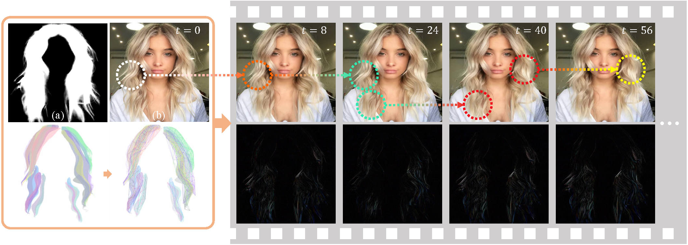
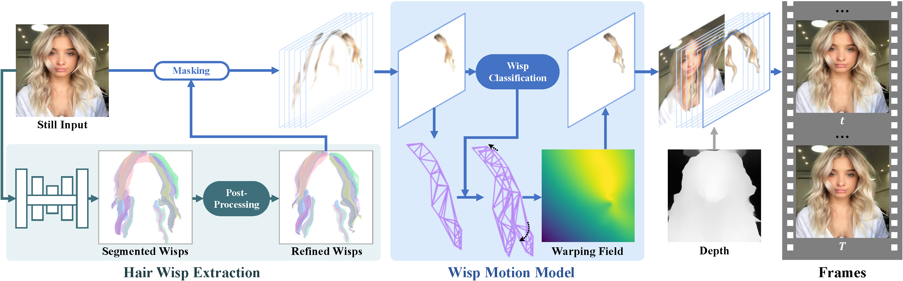

Automatic Animation of Hair Blowing in Still Portrait Photos
Overview
|  |
Abstract & Method
We propose a novel 3D GAN framework for unsupervised learning of generative, high-quality and 3D-consistent facial avatars from unstructured 2D images. To achieve both deformation accuracy and topological flexibility, we present a 3D representation called Generative Texture-Rasterized Tri-planes.
The proposed representation learns Generative Neural Textures on top of parametric mesh templates and then projects them into three orthogonal-viewed feature planes through rasterization, forming a tri-plane feature representation for volume rendering. In this way, we combine both fine-grained expression control of mesh-guided explicit deformation and the flexibility of implicit volumetric representation. We further propose specific modules for modeling mouth interior which is not taken into account by 3DMM.
Quantitative Ablations
| Ours | Ours w/o HairWisps | Ours w/o Depth | Ours w/i Floodingfill |
Extensions
| Cloth Blowing | Anime Hair Blowing | Combination to Background Flowing |
 |
 |
 |